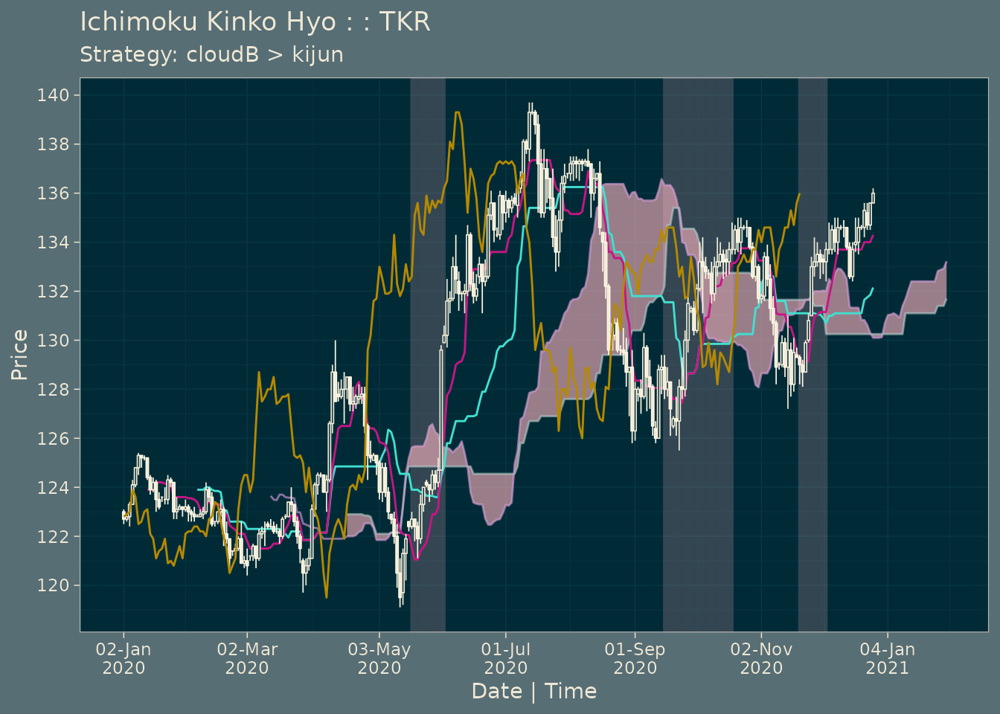

vignettes/strategies.Rmd
strategies.RmdThere are multiple ways to work with Ichimoku Kinko Hyo strategies using the ‘ichimoku’ package in R.
First and foremost is visually, and the functions for visualization are described in the reference vignette.
However if a more methodical approach is required, for instance to test hypotheses about the price action of a particular security under certain scenarios, it is necessary to perform analysis on the data directly. Here, complications of the ichimoku system can become apparent. The Chikou span in particular poses a challenge as the position of this indicator needs to be mapped in relation to the chart elements 26 periods previously, however this then affects trading decisions at the present point in time.
The ‘strategy layer’ of the ichimoku package aims to prepare the data in a standardized format for easy analysis in R packages such as ‘PerformanceAnalytics’. Short strategy summaries are generated automatically, but are designed to serve as a quick reference rather than a replacement for a full backtest.
The autostrat() function is used to further facilitate idea and strategy generation, and leverages the computational abilities of R to simultaneously test all valid indicator combinations. Whilst not all strategies returned may make intuitive sense, they will at a minimum serve to provide another benchmark. Again, the results generated are meant to be fed through a full backtest, with all the implications analysed. Past results do not imply future performance, and the results obtained should not be relied upon on the basis of the results alone.
ichimoku()
To create an ichimoku object from the price data.
# Simulated OHLC pricing data is assigned to data frame 'TKR':
TKR <- sample_ohlc_data
cloud <- ichimoku(TKR)strat()
To test a simple strategy with an indicator condition of the form ‘long (or short) while c1 > c2’.
Here ‘c1’ and ‘c2’ are the quoted column names of the ichimoku object representing either candlestick values e.g. ‘close’ or cloud values e.g. ‘tenkan’.
Note: the indicator condition is c1 > c2 even for short trades. Hence please take care for example when inverting ‘long while close > tenkan’ to ‘short while close < tenkan’, this should be formulated as ‘short while tenkan > close’.
strat <- strat(cloud, c1 = "close", c2 = "tenkan")
print(strat[100:105], plot = FALSE)
#> open high low close cd tenkan kijun senkouA senkouB
#> 2020-04-26 23:00:00 122.7 122.7 121.8 122.4 -1 120.50 123.35 125.625 124.85
#> 2020-04-27 23:00:00 122.4 122.6 121.1 121.9 -1 120.50 123.35 125.675 124.85
#> 2020-04-28 23:00:00 121.9 123.7 121.7 123.3 1 120.85 123.25 125.675 124.85
#> 2020-04-29 23:00:00 123.3 124.0 123.0 124.0 1 121.00 123.25 125.675 124.85
#> 2020-04-30 23:00:00 124.2 124.3 124.0 124.1 -1 121.40 123.10 125.675 124.85
#> 2020-05-02 23:00:00 124.1 124.1 123.4 123.9 -1 122.25 123.10 125.975 124.85
#> chikou cloudTop cloudBase cond posn txn logret
#> 2020-04-26 23:00:00 135.6 125.625 124.85 1 1 0 -0.0024479816
#> 2020-04-27 23:00:00 134.5 125.675 124.85 1 1 0 -0.0040933336
#> 2020-04-28 23:00:00 134.3 125.675 124.85 1 1 0 0.0114193737
#> 2020-04-29 23:00:00 135.9 125.675 124.85 1 1 0 0.0072727593
#> 2020-04-30 23:00:00 135.2 125.675 124.85 1 1 0 -0.0008054773
#> 2020-05-02 23:00:00 135.7 125.975 124.85 1 1 0 -0.0016129036
#> slogret ret sret
#> 2020-04-26 23:00:00 -0.0024479816 -0.002444988 -0.002444988
#> 2020-04-27 23:00:00 -0.0040933336 -0.004084967 -0.004084967
#> 2020-04-28 23:00:00 0.0114193737 0.011484824 0.011484824
#> 2020-04-29 23:00:00 0.0072727593 0.007299270 0.007299270
#> 2020-04-30 23:00:00 -0.0008054773 -0.000805153 -0.000805153
#> 2020-05-02 23:00:00 -0.0016129036 -0.001611604 -0.001611604The use of strat() returns an augmented ichimoku object. The printout above of a slice of the object (rows 100 to 105) shows that the following columns are appended:
Note: the assumption applies to all strategies that confirmation of whether a condition is satisfied is received at the ‘close’ of a particular period, and a transaction is initiated at the immediately following ‘open’. It is assumed that all transactions are conducted at opening prices. All events are aligned to their correct time periods, which are taken to be from the ‘open’ to the ‘close’ inclusive of that period. Hence ‘cond’ refers to if the condition is satisfied at the ‘close’ of the period, ‘posn’ also refers to whether a position is held at the ‘close’ of the period, and ‘txn’ refers to if there has been a transaction during that period (in this case occurring at the ‘open’).
strat()
Complex strategies can be created by strat() simply by supplying ‘c3’ and ‘c4’ to the function. These are the quoted column names of the ichimoku object that form the second part of the indicator condition.
To create the desired complex strategy, the argument ‘type’ must also be specified. By default this is set to 2, which means the strategy will be a combined strategy formulated as ‘c1 > c2 & c3 > c4’, where both conditions must be satisfied.
If ‘type’ is set to 3, the strategy will be formulated as an asymmetric strategy ‘c1 > c2 x c3 > c4’, where ‘c1 > c2’ is used as a position entry indicator, and ‘c3 > c4’ as a position exit indicator.
summary()
A summary of the strategy is saved as an attribute to the ichimoku object and can be accessed by the summary() function.
summary(strat)
#> [,1]
#> Strategy "close > tenkan"
#> --------------------- "----------"
#> Strategy cuml return % 5.01
#> Per period mean ret % 0.0218
#> Periods in market 119
#> Total trades 18
#> Average trade length 6.61
#> Trade success % 27.78
#> Worst trade ret % -2.54
#> --------------------- "----------"
#> Benchmark cuml ret % 3.38
#> Per period mean ret % 0.0148
#> Periods in market 224
#> --------------------- "----------"
#> Direction "long"
#> Start 2020-01-13
#> End 2020-09-28 23:00:00
#> Ticker "TKR"The summary is meant to provide a quick overview of whether a strategy is effective / desirable:
See strategy summary specification for details of the reported measures.
plot() or iplot().
plot(strat)
The periods where the strategy results in a market position are now shaded on the ichimoku cloud chart. The strategy is also printed as the chart message (if not otherwise specified).
To view the original chart without the strategy, simply pass the argument strat = FALSE when calling plot() or iplot().
stratcombine()
stratcombine() can be used to create custom combined strategies from existing strategies contained in ‘s1’ and ‘s2’ to form ‘s1 & s2’.
strat2 <- strat(cloud, "cloudBase", "kijun")
newstrat <- stratcombine(strat, strat2)
summary(newstrat)
#> [,1]
#> Strategy "close > tenkan & cloudBase > kijun"
#> --------------------- "----------"
#> Strategy cuml return % 10.64
#> Per period mean ret % 0.0653
#> Periods in market 32
#> Total trades 3
#> Average trade length 10.67
#> Trade success % 66.67
#> Worst trade ret % -1.4
#> --------------------- "----------"
#> Benchmark cuml ret % 0.94
#> Per period mean ret % 0.006
#> Periods in market 155
#> --------------------- "----------"
#> Direction "long"
#> Start 2020-04-01 23:00:00
#> End 2020-09-28 23:00:00
#> Ticker "TKR"Note: rather than combining simple strategies using stratcombine(), it is preferable to supply all 4 arguments c1, c2, c3, and c4 directly to strat() to generate a strategy of ‘c1 > c2 & c3 > c4’.
The strategy returns are saved within the ichimoku object in the columns ‘slogret’ (strategy log returns) and ‘sret’ (strategy discrete returns).
The returns (benchmark) for all periods are saved as ‘logret’ (log returns) and ‘ret’ (discrete returns).
As the ichimoku object inherits the ‘xts’ class, these columns may be fed directly into other econometrics or analytics packages such as ‘PerformanceAnalytics’, as per the example below.
autostrat()
The analytic capability of R can be leveraged to generate and evaluate all possible strategies. This function is designed for simplicity and can be run without any additional arguments on an ichimoku object. The arguments it does take are limited to:
n [default 8] number of strategies to returndir [default ‘long’] trade direction ‘long’ or ‘short’level [default 1] to return simple strategies. For complex strategies, set level = 2 to return combined strategies of the form ‘s1 & s2’ or level = 3 to return asymmetric strategies of the form ‘s1 x s2’
autostrat(cloud, n = 3)
#> [,1] [,2]
#> Strategy "senkouB > tenkan" "cloudBase > kijun"
#> --------------------- "----------" "----------"
#> Strategy cuml return % 14.72 11.96
#> Per period mean ret % 0.0886 0.0729
#> Periods in market 57 38
#> Total trades 3 3
#> Average trade length 19 12.67
#> Trade success % 66.67 66.67
#> Worst trade ret % -0.31 -0.31
#> --------------------- "----------" "----------"
#> Benchmark cuml ret % 0.94 0.94
#> Per period mean ret % 0.006 0.006
#> Periods in market 155 155
#> --------------------- "----------" "----------"
#> Direction "long" "long"
#> Start 2020-04-01 23:00:00 2020-04-01 23:00:00
#> End 2020-09-28 23:00:00 2020-09-28 23:00:00
#> Ticker "TKR" "TKR"
#> [,3]
#> Strategy "senkouB > kijun"
#> --------------------- "----------"
#> Strategy cuml return % 11.7
#> Per period mean ret % 0.0714
#> Periods in market 57
#> Total trades 3
#> Average trade length 19
#> Trade success % 66.67
#> Worst trade ret % -0.31
#> --------------------- "----------"
#> Benchmark cuml ret % 0.94
#> Per period mean ret % 0.006
#> Periods in market 155
#> --------------------- "----------"
#> Direction "long"
#> Start 2020-04-01 23:00:00
#> End 2020-09-28 23:00:00
#> Ticker "TKR"The output of autostrat() is a list of ichimoku objects. Each object can be accessed by its individual item number e.g. [[1]] for the first object, or by using look() specifying the parameter ‘which’.
The metadata is also saved as attributes to the list and can be accessed by the function look():
summary: the strategy summaries
logret: the log returns of all combinations computed by autostrat
Note: the strategies returned may not be in perfect order of strategy returns. This is due to the fact that the implementation via mlgrid() simultaneously tests all strategies using the same time interval for comparability. However individual strategies are then run on the top ‘n’ strategies using all of the available data for those indicators, which may be more than that used during comparison.
Note: as SenkouA, SenkouB, cloudTop and cloudBase are used in conjunction with other indicators, it is possible to get a series of similar returns with cloudBase > c2, senkouB > c2 etc. Although these strategies may at times be equivalent or considered equivalent, this is not always the case and ichimoku presents all such results.
autostrat() Levels 2 and 3Set the argument level = 2 to autostrat() to test all strategies with a combination of up to 2 indicator conditions, i.e. strat() with type = 2.
autostrat(cloud, n = 2, dir = "short", level = "2")
#> [,1]
#> Strategy "high > chikou & tenkan > senkouB"
#> --------------------- "----------"
#> Strategy cuml return % 13.38
#> Per period mean ret % 0.0811
#> Periods in market 18
#> Total trades 3
#> Average trade length 6
#> Trade success % 0
#> Worst trade ret % -7.68
#> --------------------- "----------"
#> Benchmark cuml ret % -0.93
#> Per period mean ret % -0.006
#> Periods in market 155
#> --------------------- "----------"
#> Direction "short"
#> Start 2020-04-01 23:00:00
#> End 2020-09-28 23:00:00
#> Ticker "TKR"
#> [,2]
#> Strategy "high > chikou & tenkan > cloudBase"
#> --------------------- "----------"
#> Strategy cuml return % 12.86
#> Per period mean ret % 0.0781
#> Periods in market 22
#> Total trades 3
#> Average trade length 7.33
#> Trade success % 0
#> Worst trade ret % -7.68
#> --------------------- "----------"
#> Benchmark cuml ret % -0.93
#> Per period mean ret % -0.006
#> Periods in market 155
#> --------------------- "----------"
#> Direction "short"
#> Start 2020-04-01 23:00:00
#> End 2020-09-28 23:00:00
#> Ticker "TKR"Set the argument level = 3 to autostrat() to test all strategies using an asymmetric combination of up to 2 indicator conditions, i.e. strat() with type = 3.
Please note that level 3 autostrat is considered experimental as the results are likely to have a higher sensitivity to the data and therefore be less robust.
autostrat(cloud, n = 2, dir = "long", level = "3")
#> [,1]
#> Strategy "senkouB > high x cloudTop > close"
#> --------------------- "----------"
#> Strategy cuml return % 15.26
#> Per period mean ret % 0.0917
#> Periods in market 113
#> Total trades 3
#> Average trade length 37.67
#> Trade success % 66.67
#> Worst trade ret % -0.38
#> --------------------- "----------"
#> Benchmark cuml ret % 0.94
#> Per period mean ret % 0.006
#> Periods in market 155
#> --------------------- "----------"
#> Direction "long"
#> Start 2020-04-01 23:00:00
#> End 2020-09-28 23:00:00
#> Ticker "TKR"
#> [,2]
#> Strategy "tenkan > low x cloudTop > close"
#> --------------------- "----------"
#> Strategy cuml return % 3.92
#> Per period mean ret % 0.0171
#> Periods in market 160
#> Total trades 3
#> Average trade length 53.33
#> Trade success % 66.67
#> Worst trade ret % -1.53
#> --------------------- "----------"
#> Benchmark cuml ret % 3.38
#> Per period mean ret % 0.0148
#> Periods in market 224
#> --------------------- "----------"
#> Direction "long"
#> Start 2020-01-13
#> End 2020-09-28 23:00:00
#> Ticker "TKR"---
Strategy cuml return %: The (discrete) percentage return achieved by pursuing the strategy, assuming all returns are compounded. This measure is equivalent to the sum of log returns converted back into a discrete return
Per period mean ret %: The percentage return (above) divided by the periods in market (below)
Periods in market: The number of periods (days, or whatever the periodicity of the data is) in the market
Total trades: Total number of trades to implement the strategy. Note that each trade requires 2 transactions, one to enter the trade and one to close out of it. Note: the benchmark would imply one trade
Average trade length: Periods in Market (above) divided by total trades (above)
Trade success %: Number of trades where the return is strictly greater than zero divided by the total number of trades
Worst trade ret %: The (discrete) percentage return of the worst-performing trade
---
Benchmark cuml return %: The (discrete) percentage return achieved using a ‘buy and hold’ strategy
Per period mean ret %: The percentage return (above) divided by the periods in market (below)
Periods in market: The number of periods (days, or whatever the periodicity of the data is) from the ‘start’ to ‘end’ dates
---
Ticker: The ticker saved in the ichimoku object
Start/end: The start and end dates of this backtest. These dates will differ for different cloud lines depending on how many periods it takes to calculate them, or if involving the chikou, shifting back a number of periods
Direction: ‘long’ or ‘short’ trade direction as can be set via the argument ‘dir’ to strat(). Only single direction strategies are considered
The ML layer provides tools for further developing quantitative ichimoku solutions.
mlgrid()
mlgrid() generates a numeric representation of the relationship between ichimoku cloud chart elements. Its purpose is to provide a base grid which can then be manipulated as required before being fed into machine learning workflows.
mlgrid() is used to power ichimoku’s autostrat() function.
The object returned by the function is a data.frame in a ‘tidy’ format with one observation per row and one feature per column with the target ‘y’ as the first column. This is a format that is compatible with many machine learning packages.
Below are shown the 2 basic types of grid: ‘boolean’ and ‘numeric’, where boolean produces a ‘1’ or ‘0’ depending on whether the condition c1_c2 (read c1 > c2) is met, whereas ‘numeric’ will produce the numeric difference of c1 - c2.
The ‘y’ column can be switched between log and discrete returns. The date-time index corresponds to when the condition is met at the close for that period. The return is the single-period return achieved by transacting at the immediately following opening price until the next opening price. In this sense, the time periods do not strictly match, but are nevertheless correctly paired.
mlgrid(cloud, y = "logret", dir = "long", type = "boolean", unique = TRUE)[100:105, 1:4]
#> y chikou_close chikou_high chikou_low
#> 2020-08-24 23:00:00 0.0022497197 1 1 1
#> 2020-08-25 23:00:00 -0.0014992507 1 1 1
#> 2020-08-26 23:00:00 -0.0007504691 1 1 1
#> 2020-08-27 23:00:00 0.0037467260 1 1 1
#> 2020-08-29 23:00:00 0.0000000000 1 1 1
#> 2020-08-30 23:00:00 0.0059657149 1 1 1
mlgrid(cloud, y = "ret", dir = "short", type = "numeric", unique = FALSE)[100:105, 1:4]
#> y chikou_close chikou_high chikou_low
#> 2020-08-24 23:00:00 -0.0022471910 5.5 4.8 6.2
#> 2020-08-25 23:00:00 0.0015003751 3.8 3.2 5.9
#> 2020-08-26 23:00:00 0.0007507508 4.7 3.4 6.1
#> 2020-08-27 23:00:00 -0.0037397158 5.1 4.0 6.0
#> 2020-08-29 23:00:00 0.0000000000 7.2 5.5 7.6
#> 2020-08-30 23:00:00 -0.0059479554 7.7 7.0 7.9Note: only valid combinations are included within the grid. This means excluding any combination involving ‘open’ as it is in effect a lagged indicator and not contemporaneous. The following trivial or highly-collinear pairs are also excluded: {high, close} ,{low, close}, {low, high}, {cloudTop, Senkou A}, {cloudBase, senkou A}, {cloudTop, senkouB}, {cloudBase, senkouB}, {cloudBase, cloudTop}.
look()
A core utility function has been included in the form of look(). This is used to inspect the informational attributes of an ichimoku object or an object returned by autostrat(), mlgrid() or oanda().
look(cloud)
#> $periods
#> [1] 9 26 52
#>
#> $periodicity
#> [1] 86400
#>
#> $ticker
#> [1] "TKR"
look(strat)
#> $periods
#> [1] 9 26 52
#>
#> $periodicity
#> [1] 86400
#>
#> $ticker
#> [1] "TKR"
#>
#> $strat
#> [,1]
#> Strategy "close > tenkan"
#> --------------------- "----------"
#> Strategy cuml return % 5.01
#> Per period mean ret % 0.0218
#> Periods in market 119
#> Total trades 18
#> Average trade length 6.61
#> Trade success % 27.78
#> Worst trade ret % -2.54
#> --------------------- "----------"
#> Benchmark cuml ret % 3.38
#> Per period mean ret % 0.0148
#> Periods in market 224
#> --------------------- "----------"
#> Direction "long"
#> Start 2020-01-13
#> End 2020-09-28 23:00:00
#> Ticker "TKR"Package website: https://shikokuchuo.net/ichimoku/
The most recent version of the package may be found at https://github.com/shikokuchuo/ichimoku/